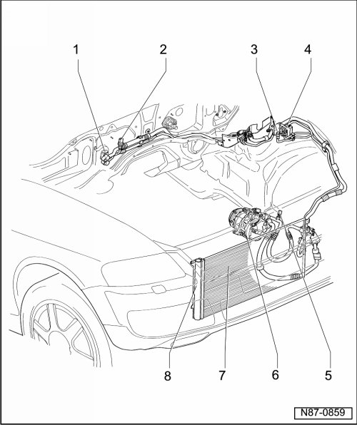

Engine Compartment Refrigerant Circuit Components, 2 Zone and 4 Zone
Engine Compartment Refrigerant Circuit Components, 2 Zone and 4 Zone
• Refrigerant must be extracted before hand using e.g. A/C Service Station (VAS 6007A).
• Environmentally hazardous draining of refrigerant is an offense punishable by law.
• The previously used service stations can still be used.
• Safety measures when working on an evacuated refrigerant circuit. Refer to --> [ Repairing and Handling Refrigerant ] Repairing and Handling Refrigerant, notes on repair work to vehicles with air conditioning and on handling refrigerant.
• To prevent the ingress of dampness all components of the refrigerant circuit which have been opened must be sealed with suitable plugs.
• The color coding of O-rings for the R134a refrigerant circuits has been discontinued. Colored and black O-rings are used.

1 Expansion Valve
• Removing and installing, refer to --> [ Expansion Valve ] Removal and Replacement
2 High Pressure Sensor (G65)
• Removing and installing, refer to --> [ High Pressure Sensor ] Service and Repair
3 Evacuating and charging valve
• High pressure side
• Environmentally hazardous draining of refrigerant is an offense punishable by law.
• Removing and installing, refer to --> [ Evacuating and Charging Valve, High Pressure Side ] Removal and Replacement
• Capacities, refer to --> [ Refrigerant R134a ] Refrigerant R134a
4 Evacuating and charging valve
• Low pressure side
• Environmentally hazardous draining of refrigerant is an offense punishable by law.
• Removing and installing, refer to --> [ Evacuating and Charging Valve, High Pressure Side ] Removal and Replacement
• Capacities, refer to --> [ Refrigerant R134a ] Refrigerant R134a
5 Refrigerant Temperature Sensor (G454)
• Removing and installing, refer to --> [ Refrigerant Temperature Sensor ] Removal and Replacement
6 A/C Compressor
• Pay attention to notes for installing A/C compressor. Refer to--> [ A/C Compressor ] A/C Compressor
• Removing and installing, refer to--> [ Compressors ] Compressors
7 Condenser
• Removing and installing, refer to --> [ Condenser ] Condenser
8 Fluid reservoir with dryer cartridge
• Under certain conditions, the dryer cartridge should no longer be replaced each time the refrigerant circuit is opened.
• Dryer cartridge, removing and installing, refer to --> [ Dryer Cartridge ] Removal and Replacement